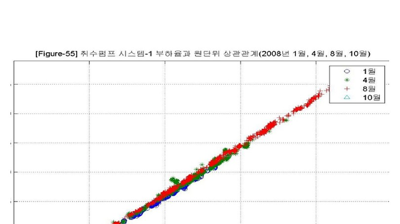

데이터로 찾는 산업·건물 에너지절감 실무 — 85쪽
취수·정수·가압 계통의 대형 송수펌프를 대상으로 계절별 소비동력, 유량, 압 력, 부하율과 원단위를 분석하고, 실제 가동대수와 필요대수를 비교해 고효 율 펌프 우선운전, 배수지 최적수위와 Peak 저감전략을 수립한 사례다. KPI·운전기준·진단 로직 개별 펌프와 시스템 데이터를 약 10 분 주기로 분석하여 소비동력-유량, 부하 율-원단위, 계절별 UPI 를 비교한다. 동일 유량대에서 시스템별 kWh/m³ 와 실제·필요 가동대수를 비교한다. 배수지 수위를 에너지저장 관점으로 활용해 송수시간과 전력 Peak 를 함께 관 리한다. 그림 18-1. 펌프시스템 유량과 소비동력 상관관계 예시. [S09] 2010 대형 송수펌프 운전특성 분 석자료를 비식별 형태로 복원.

인쇄본 기준 p. 85